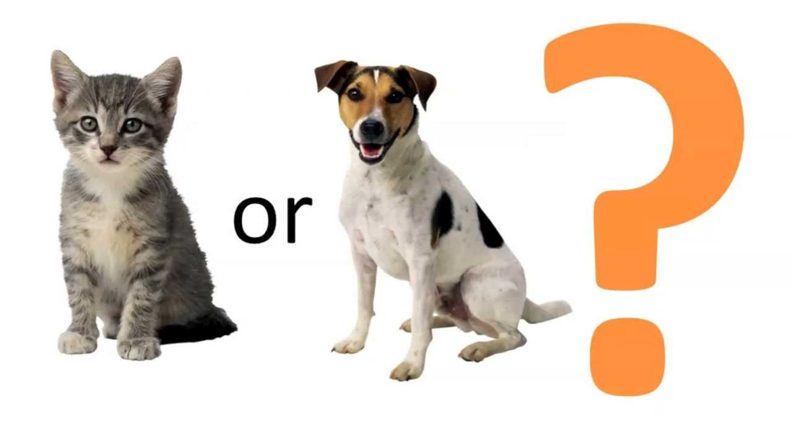

Research
My graduate study experience inspired me to apply machine learning methods into designing controller and building robust system. I wish to continue researching on applying machine learning method to build an Intelligent System for my Ph.D. study.
Machine Learning
Human Facial Emotion Recognition

In this project, a human emotion recognition system was built by deep learining. (VGG-16 convolution neural network model) Model was trained by 12,993 mage of human faces with eight basic emotions. (anger, fear, happiness, disgust, neutral, surprise, contempt, sadness)
In this project, I finished the following works:
1. Preprocessed and balanced data: upload image data and transfer into data matrix, flip image upside down and make right/left rotate to expanse tranining set. Seperated data in different groups to overcome data imbalance.
2. Built deep learning model used Keras with Tensorflow framework: Built a VGG-16 Convnet, trained the and saved parameters
Cat vs. Dog Species Recognition
In this project, I used Kaggle dataset of 15,000 dogs and 15,000 cat images to training a deeping learning model to indentify if a picture is a dog or cat(By the restriction of computering power in PC, only used 3,000 picutres as training set). By using VGG ConvNet, I built a 16 layers deep neural network, outcome a accuracy of 79% and loss of 0.55 in test set.
Moive Revenue Prediction and Related Recommend System

In this project, a regression system was built to predict movie revenue from TMBD 5,000 movies dataset. Several related movie in the dataset was listed for a given new moive.
In this project, I finished the following works:
1.Applied PCA to extract important feature, applied semi-supervised 1NN to fill missing data.
2.Trained supervised machine learning models by random forest, output the DNN model as the best prediction model with an average error less than 15%.
3. Applied KNN to find the first n nearest movie as the recommended relatively movie.